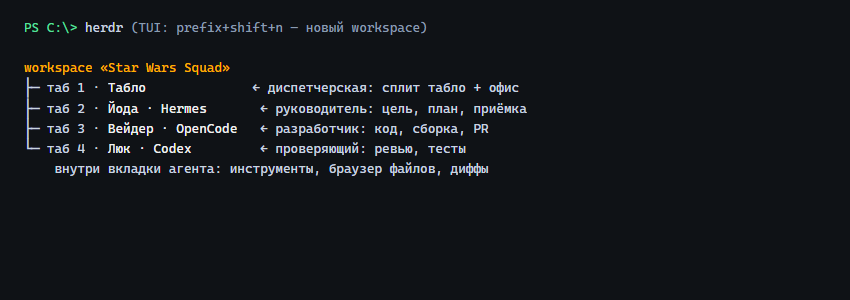
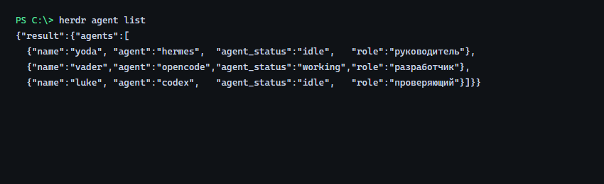
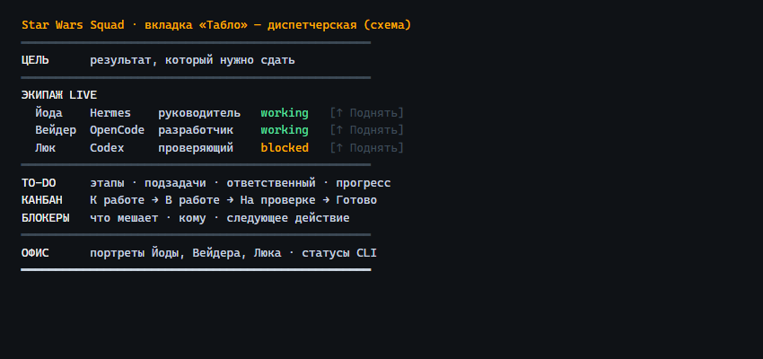

Структура workspace

Роли
yoda · hermes
Магистр Йода — руководитель
Принимает цель, строит план и to-do, распределяет задания по канбану, принимает итог. Карточки канбана строятся из записей to-do — второй список не ведётся.
vader · opencode
Дарт Вейдер — разработчик
Реализует назначенную часть в своей ветке: код, коммиты, тесты. Push только своей рабочей ветки, PR к основной. Force-push и обход проверок — вне цикла.
luke · codex
Люк Скайуокер — проверяющий
Ревью diff, тестов и критерия готовности. Замечания — в карточку Вейдеру, одобрение — Йоде. Проверка чужими глазами: Люк ≠ исполнитель.
tablo
Табло — диспетчерская
ЦЕЛЬ · ЭКИПАЖ LIVE · TO-DO · КАНБАН · БЛОКЕРЫ + нижний сплит ОФИС. Единственная вкладка, где видна вся команда.
Маршрут и Git-цикл
user → Йода → Вейдер → Люк → Йода → user
| Стадия канбана | Ответственный | Критерий перехода |
|---|---|---|
| К работе | Йода | цель, критерий готовности, исполнитель, рабочая ветка |
| В работе | Вейдер | ветка, коммиты, тесты; push ветки + PR к основной |
| На проверке | Люк | ревью diff и тестов; замечания или одобрение SHA |
| Готово | Йода | зелёные проверки, merge подтверждён, результат в карточке |
Скриншоты


Только TUI: реальные выводы и схемы. GUI-оболочки не включены — ветка ждёт проверки.
Быстрый старт
01
Установи TUI
PS C:\> irm https://herdr.dev/install.ps1 | iex PS C:\> herdr --version
02
Собери команду
# вариант 1: скиллом herdr-setup «Собери команду Star Wars Squad по скиллу herdr-setup» # вариант 2: руками по инструкции docs/SETUP.md
Что внутри репозитория
| Файл | Назначение |
|---|---|
docs/ARCHITECTURE.md | Архитектура: слои, роли, Табло, режимы, Git-цикл, реестр |
docs/SETUP.md | Пошаговая сборка со скриншотами |
examples/registry.example.json | Реестр команды: роли, CLI, пути, маршрут |
examples/instructions/ | Шаблоны: AGENTS.md + yoda/vader/luke.md |
examples/wrappers/ | Wrapper a squad (cmd + bash) |
screenshots/ | Скриншоты (только TUI) |